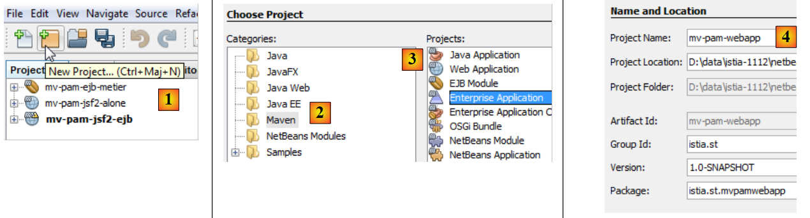
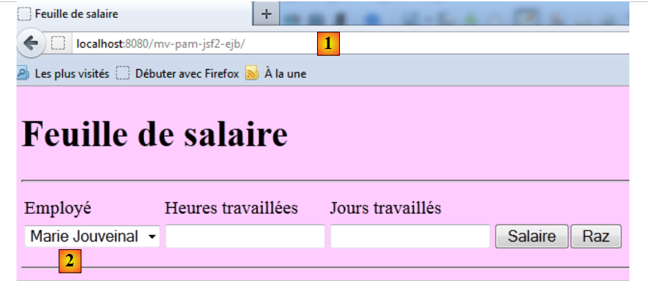

11. Version 6 - Intégration de la couche web dans une architecture 3 couches JSF / EJB
11.1. Architecture de l'application
L'architecture de l'application web précédente était la suivante :
 |
Nous remplaçons la couche [métier] simulée, par les couches [métier, DAO, jpa] implémentées par des EJB au paragraphe 7.1 :
 |
11.2. Le projet Netbeans de la couche web
Le projet Netbeans de la version web n° 2 est obtenue par copie du projet précédent :
 |
- [1] : on copie le nouveau projet et on le colle dans l'onglet [Projects],
- [2] : on lui donne un nom et on fixe son dossier,
- [3] : le projet créé,
Le nouveau projet porte le même nom que l'ancien. Nous changeons cela :
 |
- [4] : nous renommons le projet,
- [5] : on change son nom ainsi que celui de l'artifactID.
Nous avons peu de modifications à faire pour adapter cette couche web à son nouvel environnement : la couche [metier] simulée doit être remplacée par la couche [metier, DAO, jpa] du serveur construit au paragraphe 7.1. Pour cela, nous faisons deux choses :
- nous supprimons les paquetages [exception, metier, jpa] qui étaient présents dans le précédent projet.
- pour compenser cette suppression, nous ajoutons aux dépendances du projet web, le projet du serveur EJB construit au paragraphe 7.1.
 |
- en [1], on ajoute une dépendance au projet,
- en [2], on sélectionne le projet Maven de la couche [métier]. En [3], on précise son type et en [4] sa portée. Celle-ci est provided pour indiquer que celui-ci sera fourni (provided) au module web par son environnement de travail. Nous verrons prochainement qu'il lui sera fourni par une application d'entreprise,
- en [5], la dépendance a été ajoutée.
Le fichier [pom.xml] est alors le suivant :
<dependencies>
<dependency>
<groupId>${project.groupId}</groupId>
<artifactId>mv-pam-ejb-metier-dao-eclipselink</artifactId>
<version>${project.version}</version>
<scope>provided</scope>
<type>ejb</type>
</dependency>
<dependency>
<groupId>javax</groupId>
<artifactId>javaee-web-api</artifactId>
<version>6.0</version>
<scope>provided</scope>
</dependency>
</dependencies>
Nous pouvons maintenant supprimer les paquetages de la couche [métier] qui ne sont plus nécessaires :
 |
Il nous faut également modifier le code du bean [Form.java] :
public class Form {
public Form() {
}
// couche métier
private IMetierLocal metier=new Metier();
// champs du formulaire
...
La ligne 7 instanciait la couche [métier] simulée. Désormais elle doit référencer la couche [métier] réelle. Le code précédent devient le suivant :
public class Form {
public Form() {
}
// couche métier
@EJB
private IMetierLocal metier;
// champs du formulaire
Ligne 7, l'annotation @EJB indique au conteneur de servlets qui va exécuter la couche web, d'injecter dans le champ metier de la couche 8, l'EJB qui implémente l'interface locale IMetierLocal.
Pourquoi l'interface locale IMetierLocal plutôt que l'interface IMetierRemote ? Parce que la couche web et la couche EJB s'exécutent dans la même JVM :
 |
Les classes du conteneur de servlets peuvent référencer directement les classes EJB du conteneur EJB.
C'est tout. Notre couche web est prête. La transformation a été simple parce qu'on avait pris soin de simuler la couche [métier] par une classe qui respectait l'interface IMetierLocal implémentée par la couche [métier] réelle.
11.3. Le projet Netbeans de l'application d'entreprise
Une application d'entreprise permet le déploiement simultané sur un serveur d'applications, de la couche [web] et de la couche EJB d'une application, respectivement dans le conteneur de servlets et dans le conteneur EJB.
Nous procédons de la façon suivante :
 |
- en [1], on crée un nouveau projet
- en [2], on choisit la catégorie [Maven]
- en [3], on choisit le type [Enterprise Application]
- en [4], on donne un nom au projet
 |
- en [5], nous choisissons Java EE 6
- en [6], un projet d'entreprise peut comprendre jusqu'à deux types de modules :
- un module EJB
- un module web
On peut demander en même temps que la création du projet d'entreprise, la création de ces deux modules qui seront vides au départ. Un projet d'entreprise ne sert qu'au déploiement des modules qui en font partie. En-dehors de ça, c'est une coquille vide. Ici, nous voulons déployer :
- un module web existant [mv-pam-jsf2-alone]. Il est donc inutile de créer un nouveau module web.
- un module EJB existant [mv-pam-ejb-metier-dao-eclipselink]. Là également, il est inutile d'en créer un nouveau.
En [6], nous créons un projet d'entreprise sans modules. Nous allons lui ajouter ses modules web et ejb ultérieurement.
- en [7], deux projets Maven ont été créés. Le projet d'entreprise est celui qui a le suffixe ear. L'autre projet est un projet Maven parent du précédent. Nous ne nous en occuperons pas.
Nous ajoutons le module web et le module EJB au projet d'entreprise :
 |
- en [1], ajout d'une nouvelle dépendance,
- en [2], ajout du projet EJB [mv-pam-ejb-metier-dao-eclipselink]. On notera son type ejb,
- en [3], ajout du projet web [mv-pam-jsf2-ejb]. On notera son type war.
Le fichier [pom.xml] est alors le suivant :
<dependencies>
<dependency>
<groupId>${project.groupId}</groupId>
<artifactId>mv-pam-ejb-metier-dao-eclipselink</artifactId>
<version>${project.version}</version>
<type>ejb</type>
</dependency>
<dependency>
<groupId>${project.groupId}</groupId>
<artifactId>mv-pam-jsf2-ejb</artifactId>
<version>${project.version}</version>
<type>war</type>
</dependency>
</dependencies>
Avant le déploiement de l'application d'entreprise [mv-pam-webapp-ear], on s'assurera que la base MySQL [dbpam_eclipselink] existe et est remplie. Ceci fait, nous pouvons déployer l'application d'entreprise [mv-pam-webapp-ear] :
 |
- en [1], l'application d'entreprise est déployée
- en [2], l'application d'entreprise [mv-pam-webapp-ear] a bien été déployée.
Dans le navigateur, on obtient la page suivante :
 |
- en [1], l'URL demandée
- en [2], la liste des employés a été remplie avec les éléments de la table [Employes] de la base dbpam.
Le lecteur est invité à refaire les tests de la version web n° 1. Voici un exemple d'exécution :